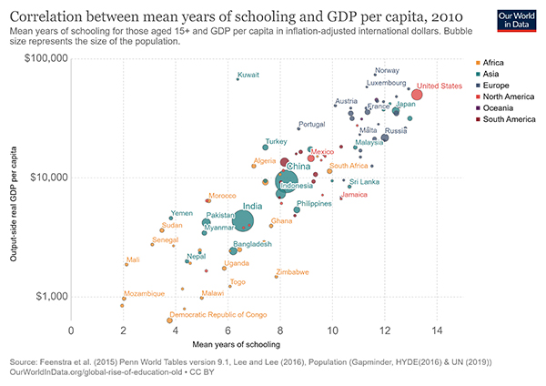

“Education is the great engine of personal development. It is through education that the daughter of a peasant can become a doctor, that the son of a mineworker can become the head of the mine, that the child of farm workers can become the president of a great nation.” – Nelson Mandela
Ten percent of the world’s population lives on under $1.90 per day. Extreme poverty is still rampant across the globe and is one of humanities most unfortunate attributes. The eradication of extreme poverty its one of the main goals of the UN within the next ten to fifteen years and that is fantastic. Education is a big part of this solution.
Education is a foolproof way to social mobility. The more education you get, the better off you generally are. Whether this is a better job, better health, or better general wellbeing, educational attainment is one of the best predictors of all three. Lucky for us, education is the most widespread and readily available it has ever been. Most of the knowledge the world has ever known is just a few clicks away. Our job is to afford this world of knowledge to those who do not yet have it.
From a global perspective, education may be the best way to help underdeveloped countries. There are so many correlates to education that make that statement so strong. Child mortality decreases as education increases, GDP (gross domestic product) per capita increases with education, and along with capita gains in GDP we see all of the aforementioned wellbeing increases. Helping establish educational frameworks in these underdeveloped countries is the greatest investment that we can make besides vaccines. The coupling of these two factors on a large scale is potentially the best way we, as humans, can eliminate extreme poverty. This is a general wellbeing increase. This is all the progress we can ask for.
 Graphs Provided by OurWorldinDataThankfully, we have seen rises in education worldwide as the average number of years of schooling has increased, the literacy rate has increased and government expenditures on education has increased. Its fantastic news, but the effort is not done. Investing in education is the best thing we can do for future generations and that is starting to become more apparent. Improving the lives of every individual on the planet may not be possible but giving them education and the tools to learn and develop the skills needed in the modern world is pretty damn amazing.
Data and figures provided by OurWorldInData.org